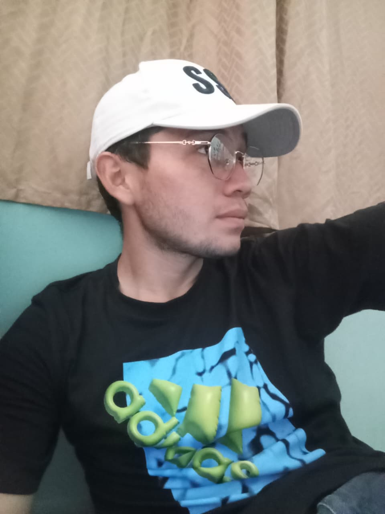

Estudiante de Licenciatura en Informática · Universidad Modular Abierta Regional San Miguel
Hola, mi nombre es Oscar Efraín Guzmán Álvarez, tengo 24 años y soy estudiante de Licenciatura en Informática en la Universidad Modular Abierta, Regional San Miguel. Me gradué de bachillerato en el año 2020 y desde entonces he combinado mis estudios con experiencia laboral en diferentes sectores. Me apasiona la tecnología, el desarrollo web y las bases de datos, y estoy comprometido con seguir creciendo profesionalmente en el área de la informática y el desarrollo de software.
Atención al cliente, manejo de inventario y gestión de ventas. Desarrollé habilidades de responsabilidad, organización y trato con el público.
Experiencia en el sector de telecomunicaciones. Atención al cliente y manejo de servicios tecnológicos, lo que fortaleció mis habilidades comunicativas y técnicas.
Sitio web personal desarrollado con HTML y CSS, versionado con Git y publicado mediante GitHub Pages.
Desarrollo de bases de datos relacionales usando SQL, como parte de la materia de Programación II.